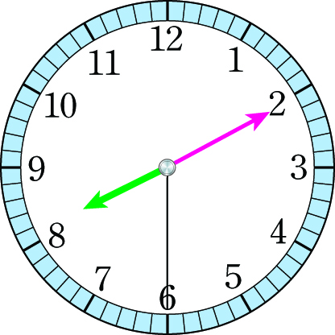

- 문제 1
- 문제 2
- 문제 3
- 문제 4
- 문제 5
- 문제 6
- 문제 7
-
계산해 보시오.
3 시 15 분 22 초 ＋ 4 시간 15 분 17 초 7시 30분 39초 1 시간 25 분 45 초 ＋ 6 시간 40 분 10 초 8시 5분 55초 -
우주가 세면대에서 손을 33초 동안 씻었고, 이어서 샛별이는 42초 동안 씻었습니다. 두 사람이 손을 씻는 데 걸린 시간은 몇 분 몇 초입니까?
1분 15초 -
시계가 나타내는 시각에서 2시간 13분 25초가 지난 시각을 구해 보시오.
10시 23분 55초 -
안에 알맞은 수를 써넣으시오.
7 시 24 분 15 초 ＋ 2 시간 12 분 37 초 9시 36분 52초 -
계산을 하시오.
5시 21분 47초＋1시간 32분 7초＝6시 53분 54초 -
잘못된 곳을 찾아 바르게 계산하시오.
3 시 15 초 ＋ 6 분 12 초 9 분 42 초 3 시 30 초 ＋ 6 분 12 초 3 시 6 분 42 초 -
두 명이 한 모둠이 되어 이어달리기 경주를 했습니다. 어느 모둠이 이겼을지 구하시오.
모둠 이름 달리기 기록 1 모둠 지혜 2분 42초 수일 2분 16초 2 모둠 도영 2분 35초 슬기 2분 24초 1 모둠